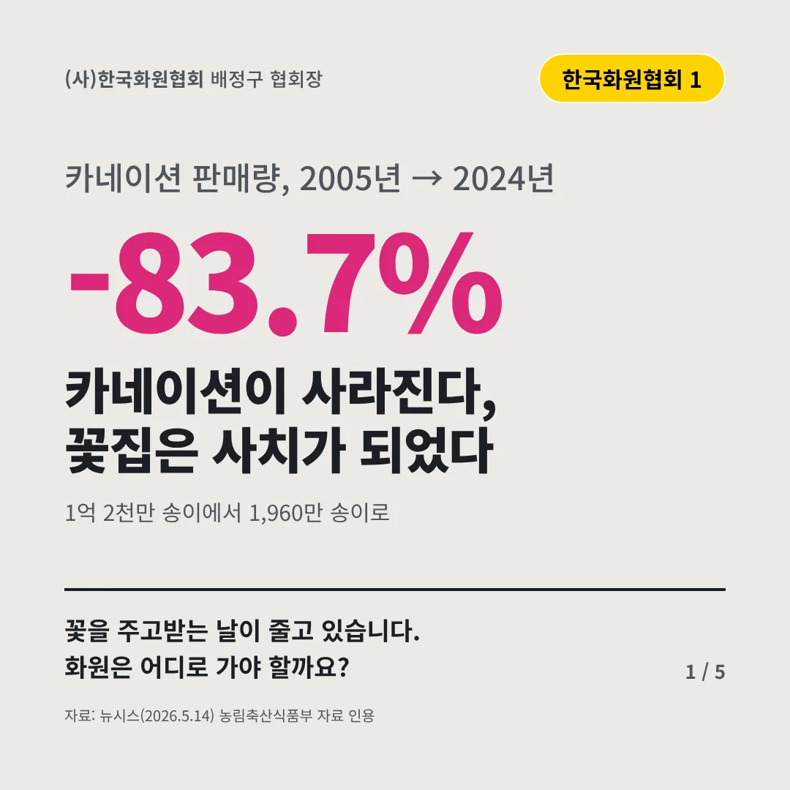
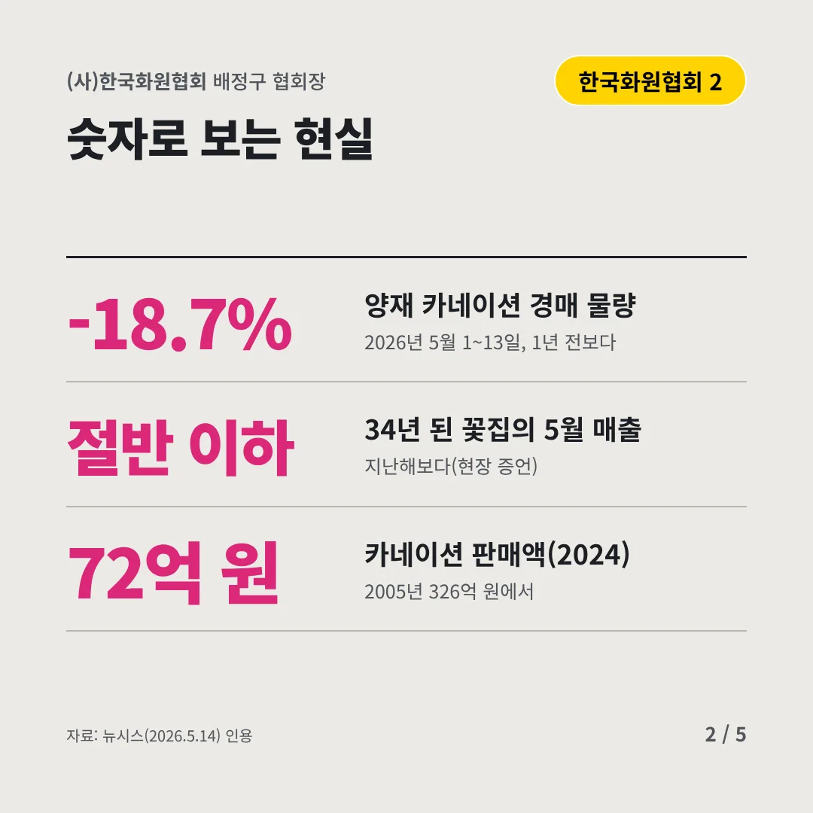
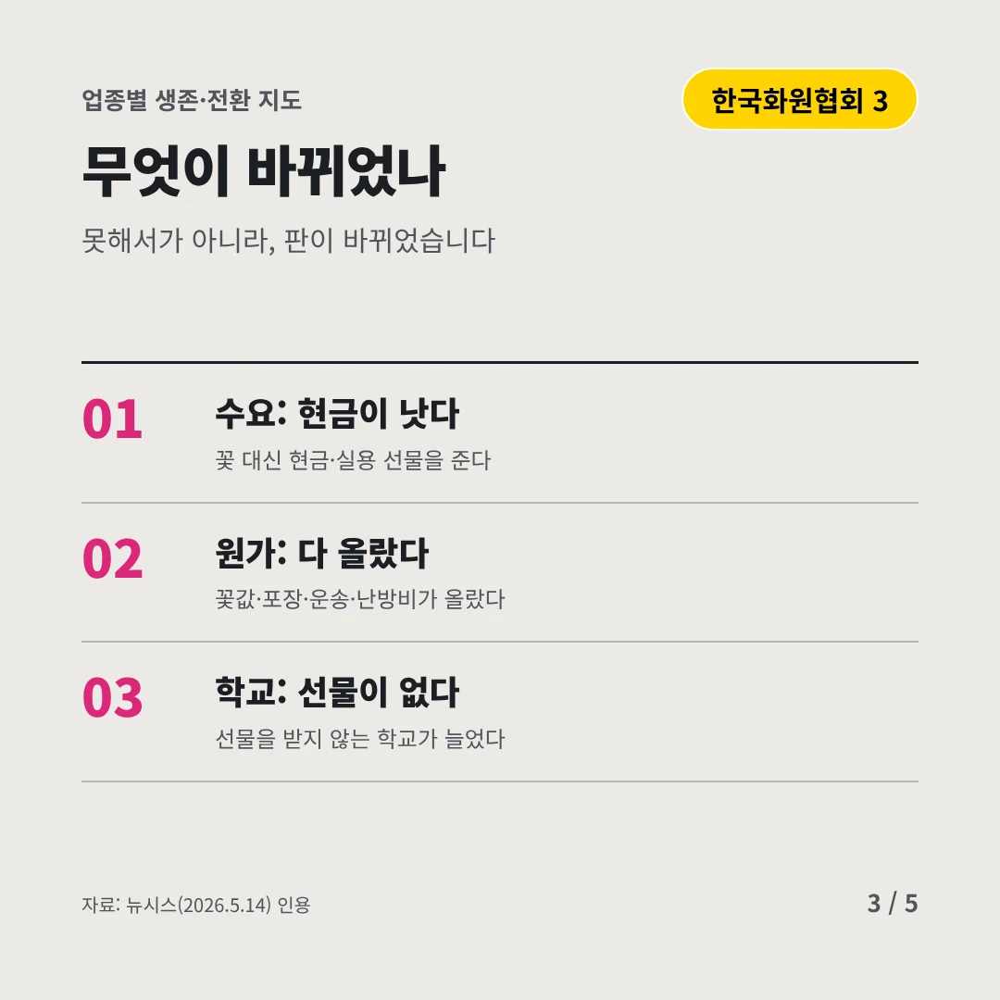
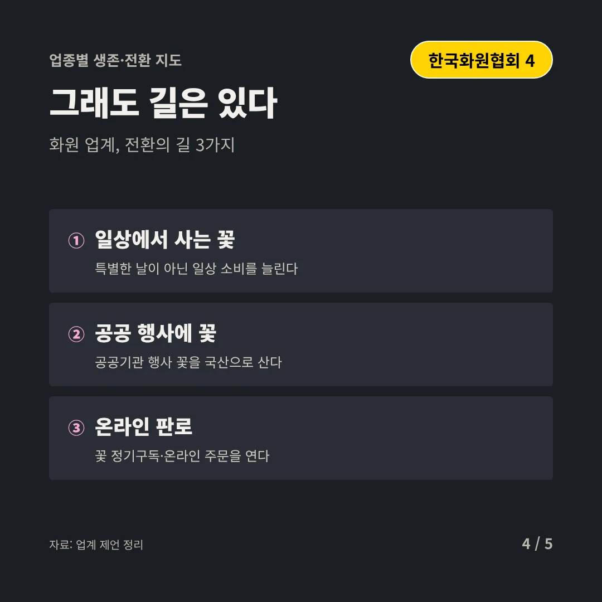
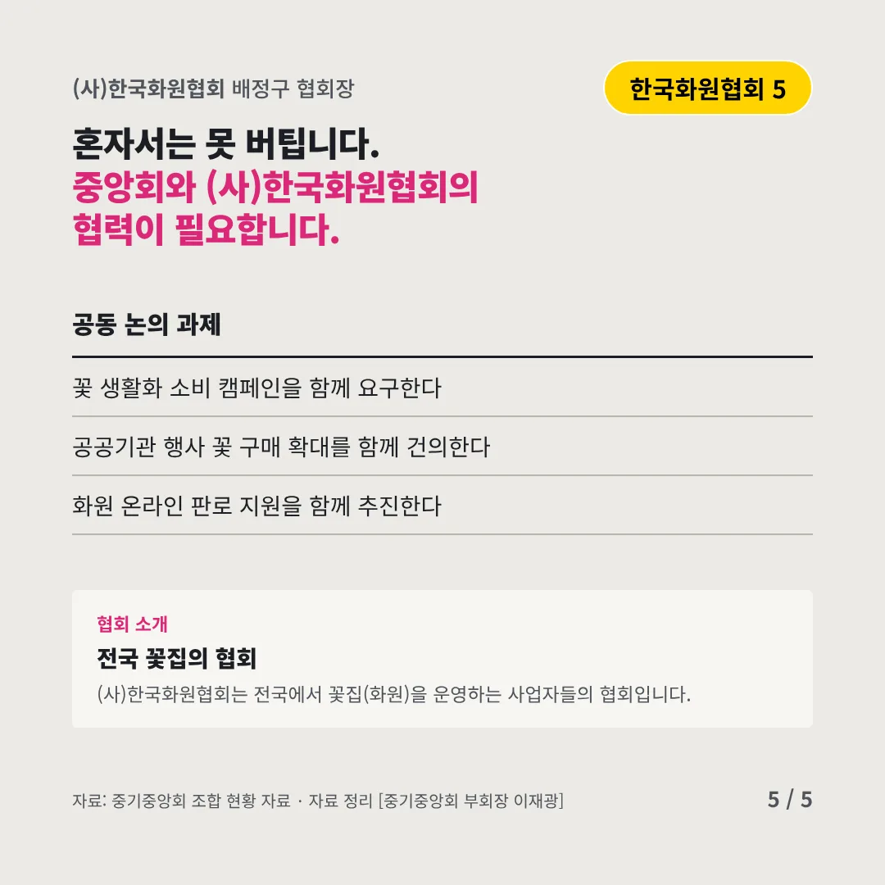
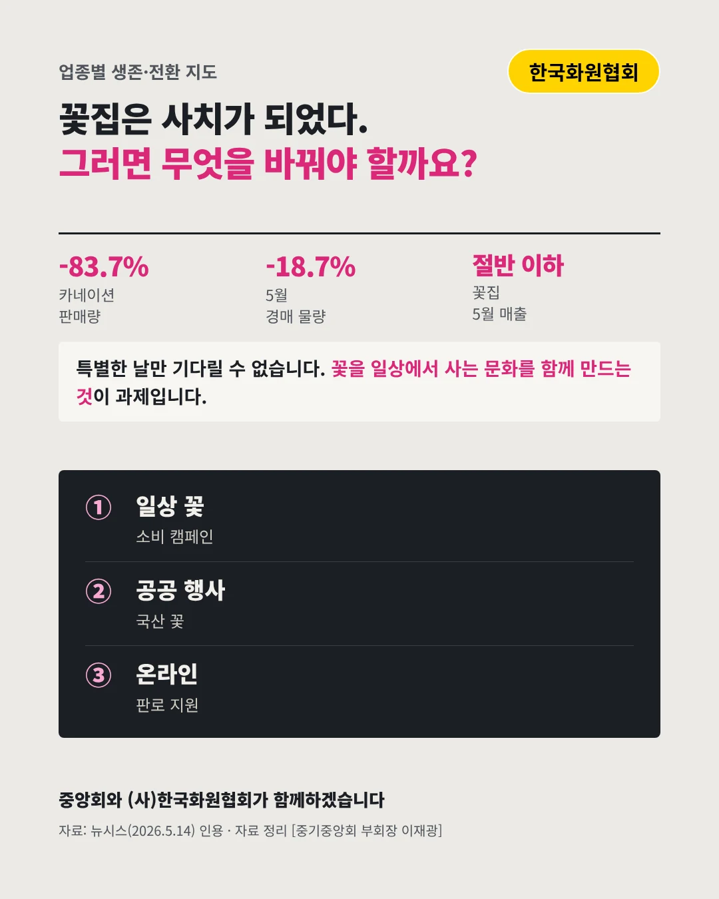

(사)한국화원협회
카네이션이 사라진다, 꽃집은 사치가 되었다
-83.7% 카네이션 판매량, 2005년 → 2024년






꽃을 주고받는 날이 줄고 있습니다. 화원은 어디로 가야 할까요?
숫자로 보는 현실
- -18.7%양재 카네이션 경매 물량2026년 5월 1~13일, 1년 전보다
- 절반 이하34년 된 꽃집의 5월 매출지난해보다(현장 증언)
- 72억 원카네이션 판매액(2024)2005년 326억 원에서
무엇이 바뀌었나
- 수요: 현금이 낫다꽃 대신 현금·실용 선물을 준다
- 원가: 다 올랐다꽃값·포장·운송·난방비가 올랐다
- 학교: 선물이 없다선물을 받지 않는 학교가 늘었다
그래도 길은 있다
- 일상에서 사는 꽃특별한 날이 아닌 일상 소비를 늘린다
- 공공 행사에 꽃공공기관 행사 꽃을 국산으로 산다
- 온라인 판로꽃 정기구독·온라인 주문을 연다
한 장 요약

협회 소개
(사)한국화원협회는 전국에서 꽃집(화원)을 운영하는 사업자들의 협회입니다.
자료: 뉴시스(2026.5.14)